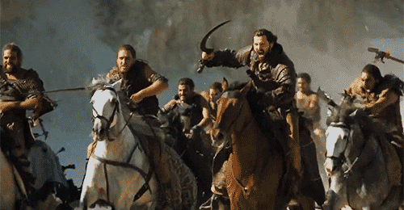

Game of Thrones - Battles
Content
Of course, it goes without saying that this dataset contains spoilers 😉
This dataset is based on information from the book series.
Three great storylines weave through the books, charting the civil war for control of the Seven Kingdoms; the defence of the towering Wall of ice in the uttermost north against the unearthly threat of the Others; and across the Narrow Sea the rise to power of Daenerys Targaryen and the last live dragons in the world.
The battles.csv which contains Chris Albon's "The War of the Five Kings" Dataset. Its a great collection of all of the battles in the series.
Context
Game of Thrones is a hit fantasy tv show based on the equally famous book series "A Song of Fire and Ice" by George RR Martin. The show is well known for its vastly complicated political landscape, large number of characters, and its frequent character deaths.

Acknowledgements
The battles.csv which contains Chris Albon's "The War of the Five Kings" Dataset, which can be found at: https://github.com/chrisalbon/war_of_the_five_kings_dataset Its a great collection of all of the battles in the series.
Region Selector
The region where the battle takes place. Categories: Beyond the Wall, The North, The Iron Islands, The Riverlands, The Valeof Arryn, The Westerlands, The Crownlands, The Reach, The Stormlands, Dorne
Click or hover on the charts to select and analyse data
Battles over the years
Information is based over a 3 year period from 298 - 300
Attacker Size
The size of the attacker's force. No distinction is made between the types of soldiers such as cavalry and footmen
Defender Size
The size of the defenders's force. No distinction is made between the types of soldiers such as cavalry and footmen
Attacker King
The attacker's king. A slash indicators that the king charges over the course of the war. For example, "Joffrey/Tommen Baratheon" is coded as such because one king follows the other in the Iron Throne
Defender King
The defender's king. A slash indicators that the king charges over the course of the war. For example, "Joffrey/Tommen Baratheon" is coded as such because one king follows the other in the Iron Throne
Types of battle attack
A classification of the battle's primary type. Categories: pitched_battle: Armies meet in a location and fight. This is also the baseline category. ambush: A battle where stealth or subterfuge was the primary means of attack. siege: A prolonged of a fortied position. razing: An attack against an undefended position
Every battle between major houses and groups. Hover the line for details.
Click to open in new windowCredit to:https://bl.ocks.org/bsullins